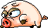

Lv. 7 · #1210100
돼지
빠른 속도로 돌아다니며 육중한 몸으로 공격하는 몬스터이다. 재빨리 달아나지 않으면 쫓아다니며 공격을 가한다. 사냥하면 간혹 얻을 수 있는 돼지의 머리는 메이플 월드의 많은 사람들이 좋아하는 별미라고 한다.
스탯
레벨 7- HP
- 75
- MP
- 40
- EXP
- 15
- 넉백 가능 데미지
- 1+
- 물리 데미지
- 37
- 마법 데미지
- 0
- 물리 방어력
- 5
- 마법 방어력
- 20
- 속도
- 0
- 7레벨 에서의 필요 명중
- 0
- 메소
- 52.5
- 속성관계
- 미기재
- 체경비
- 5.00
- 형태
- 동물형
출현 지역
출현 맵 17개메이플노트 목록 분류
빅토리아 / 엘린숲
출현 맵
맵 이름을 누르면 메이플노트의 맵 정보가 열립니다.
드롭 테이블
전체 20개| 아이템 | 아이템 ID | 드롭 확률 |
|---|---|---|
| 돼지의 인형 | 4032130 | 5% |
| 동물의 가죽 | 4000021 | 1.5% |
| 돼지의 머리 | 4000017 | 1% |
| 빨간 포션 | 2000000 | 1% |
| 석궁전용 화살 | 2061000 | 0.8% |
| 활전용 화살 | 2060000 | 0.8% |
| 초록사과 | 2010009 | 0.7% |
| 토파즈의 원석 | 4020006 | 0.3% |
| 돼지 오목알 | 4030011 | 0.3% |
| 금의 원석 | 4010006 | 0.1% |
| 가니어 | 1472000 | 0.1% |
| 나무 망치 | 1422000 | 0.08% |
| 갈색 하드래더 바지 | 1062002 | 0.01% |
| 흑야 | 1040034 | 0.01% |
| 흰색 가람 치마 | 1061028 | 0.01% |
| 갈색 가죽 모자 | 1002008 | 0.01% |
| 오렌지 스퀘이머 | 1041014 | 0.01% |
| 신발 민첩 주문서 10% | 2040702 | 0.006% |
| 망토 행운 주문서 100% | 2041021 | 0.006% |
| 브라운 로키 반다나 | 1002610 | 0.0012% |
조건에 맞는 드롭 아이템이 없습니다.
확률은 메이플노트에 게시된 값입니다. 아이템 이름을 누르면 원본 아이템 정보가 열립니다. 과거 버전 데이터이므로 실제 메이플랜드와 다를 수 있습니다.